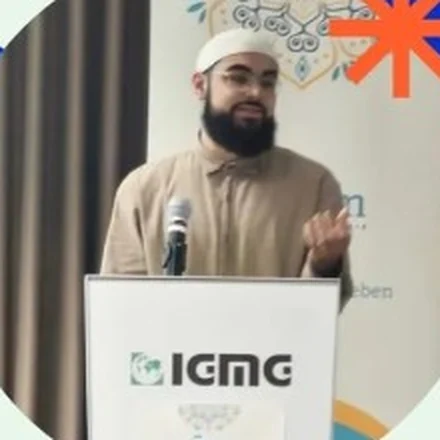
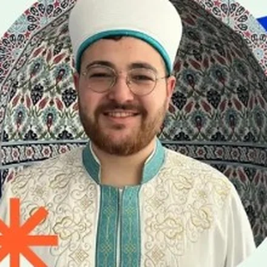
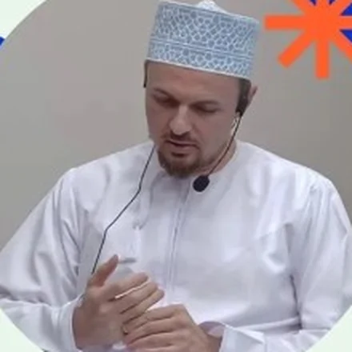
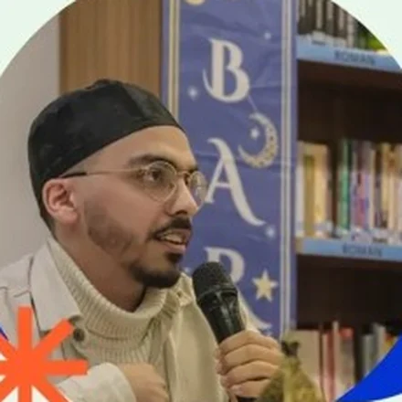
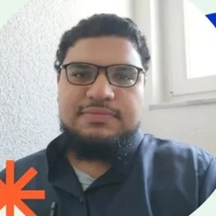
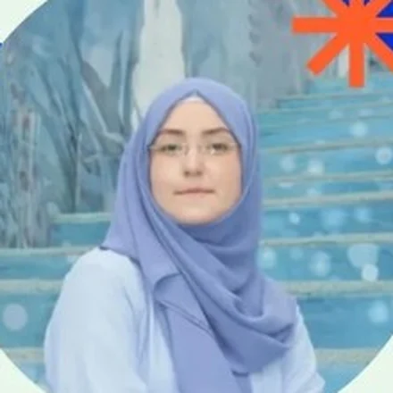

DEIN EINSTIEG
Vorbereitungskurs
Ein verständlicher Einstieg in Islam, Īmān, ‘Ibāda, Prophetentum, Ahlâq und Koran.
Einführung in die islamische LehreDein strukturierter Weg zum Islamwissen. Verständlich, fundiert und auf Deutsch – für Menschen, die Fragen stellen, gemeinsam lernen und im Glauben wachsen möchten.
01 DIE IDEE HINTER QALAM
Qalam ist ein Bildungsangebot für Menschen, die den Islam kennenlernen oder ihr religiöses Wissen vertiefen möchten. Wir verbinden Grundlagenwissen mit persönlichem Austausch, Gemeinschaft und alltagsnahen Fragen.
Ob du neu zum Islam gefunden hast oder schon lange Muslimin oder Muslim bist: Du kannst in deinem eigenen Lerntempo Fragen stellen, Zusammenhänge verstehen und Schritt für Schritt weiterlernen.
Noch Fragen? Schreib uns02 UNSER LERNWEG
Ein klarer Aufbau – von den ersten Fragen bis zu vertiefenden Themen. Der Vorbereitungskurs und fünf aufeinander aufbauende Grundlagenmodule bilden den Rahmen.
Ein verständlicher Einstieg in Islam, Īmān, ‘Ibāda, Prophetentum, Ahlâq und Koran.
Einführung in die islamische LehreIslamische Glaubenslehre, Charakterentwicklung und Spiritualität.
Aqīda · Ahlâq · SpiritualitätGrundlagen der islamischen Religionspraxis und die Lebensgeschichte des Propheten Muhammad (s).
‘Ilm al-Hāl I · Sīra IWeitere Fragen der Religionspraxis und die medinensische Zeit der prophetischen Biografie.
‘Ilm al-Hāl II · Sīra IIZugänge zum Koran sowie Grundlagen von Hadith und Sunna.
Hadith · Sunna · Koranisches WissenMuslimisches Leben in Europa und eine Einführung in das Lesen des Korans.
Islam in Europa · KoranlesenDer Lehrplan verbindet religiöses Wissen, persönliche Entwicklung und den Austausch in der Gruppe.
Fragen zum KursNicht alles auf einmal wissen müssen. Sondern heute beginnen, mehr zu verstehen.
04 SO LERNEN WIR
Wir erklären Zusammenhänge klar und nehmen Fragen ernst.
Wissen wächst leichter im Austausch mit anderen Menschen.
Was wir lernen, soll Orientierung im eigenen Leben geben.
05 DIE MENSCHEN
Unser Lehrpersonal und das Qalam-Team begleiten das Lernen mit Fachwissen und persönlichem Engagement.
IGMG Göppingen

IGMG Möckmühl

IGMG Rastatt

Lehrpersonal

IGMG Karlsruhe

Qalam Verantwortlicher

Qalam Frauen
06 LERNEN MIT PLAN
Wann und wo wir gemeinsam lernen: Hier findest du die veröffentlichten Kurstermine und Informationen zur Teilnahme.
Du möchtest dabei sein? Teile uns über das Anmeldeformular mit, für welchen Kurs du dich interessierst. Wir melden uns mit weiteren Informationen.
07 EINBLICKE & NEUIGKEITEN
08 GUT ZU WISSEN
Hier findest du die wichtigsten Informationen zum Einstieg. Für persönliche Fragen ist das Qalam-Team erreichbar.
Kontakt aufnehmenFür Menschen ab 16 Jahren, die den Islam kennenlernen oder ihr religiöses Wissen vertiefen möchten. Auch wenn du neu zum Islam gefunden hast, bist du willkommen.
Der Vorbereitungskurs bietet einen verständlichen Einstieg in die islamische Lehre. Wenn du bereits Vorwissen hast und unsicher bist, welches Modul passt, sprich uns an.
Das Bildungsangebot ist deutschsprachig. Islamische Begriffe werden im Zusammenhang mit den jeweiligen Themen erklärt.
Auf den Vorbereitungskurs folgen fünf Grundlagenmodule: Glaube und Persönlichkeit, religiöse Praxis und Sīra, Koran und Überlieferung sowie Islam in Europa und Koranlesen.
Alle Module ansehenVeröffentlichte Termine findest du im Bereich „Unterricht & Termine“. Ob ein Termin online oder vor Ort stattfindet, wird dort angegeben. Bei Fragen zu Kursbeginn, Umfang oder Teilnahmegebühren hilft dir das Qalam-Team weiter.
Zu den TerminenÜber „Jetzt anmelden“ gelangst du zum externen Anmeldeformular bei Tally. Dort kannst du deinen Kurswunsch angeben. Anschließend meldet sich das Team mit weiteren Informationen bei dir.
09 KONTAKT & TEILNAHME
Du interessierst dich für Qalam Württemberg, möchtest mitlernen oder hast eine Frage zu einem Modul? Melde dich bei uns. Aktuelle Termine und Anmeldeinformationen veröffentlichen wir auf unseren Kanälen.
Direkt an das Qalam-Team
qalam.wuerttemberg@gmail.comDie Anmeldung öffnet das Formular bei Tally in einem neuen Tab.